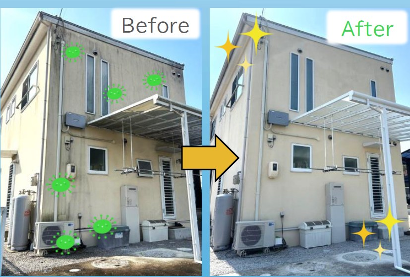
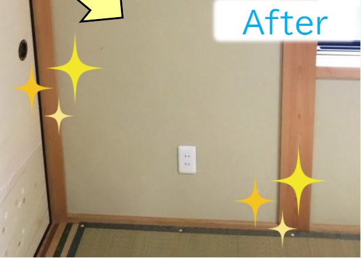
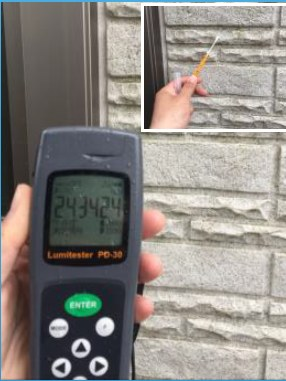
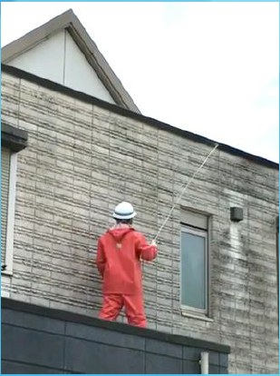
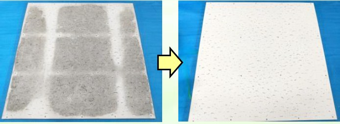

カビの性質と現場リスクを丁寧に整理
岡山県全域対応 ／ 外壁・浴室・室内のカビ専門洗浄
そのカビ汚れ、 塗り替えの前に 落とせるかもしれません。
FRS工法は、住まいのカビ汚れを調査し、素材に配慮しながら特殊洗浄剤で分解・除去する専門施工です。まずは写真を送るだけでご相談いただけます。
- 850+
- 岡山・周辺累計施工写真相談から現場対応まで
- 97%
- お客様満足度分かりやすい説明を重視
- 15年
- カビ専門施工実績調査・確認・除去を一貫対応
FRS工法とは
ただ強く洗うのではなく、原因を見てから落とすカビ対策です。
FRS = Fungus Research Sanitation。カビを研究し、衛生的な住環境を整えることを目的とした工法です。「とりあえず洗う」ではなく、調査・確認・除去の順に進めるため、納得してから施工を判断できます。
発生状況と根本原因を確認
見えないカビを検査で見える化
特殊洗浄剤で根元から分解・除去
こんな悩みはありませんか
見て見ぬふりをしていたカビ汚れが、毎日の小さなストレスになる。
外壁の黒ずみ・緑色汚れ
北側や日陰に発生しやすく、帰宅するたびに家が古く見えてしまいます。近所と比べてしまって、なんとなく気になっている方も多いです。
浴室や室内のカビ臭
掃除してもすぐ戻る汚れやにおいは、家族の健康面でも気になる場所です。特に小さなお子様やご高齢の方がいるご家庭で多くご相談いただきます。
市販品・高圧洗浄で落ちない
洗剤やブラシ、高圧洗浄で何度試しても戻ってくる汚れは、カビの種類に合った洗浄剤と工法が必要なサインです。
Before / After
気になっていた場所がきれいになると、家に帰る気分が変わります。
岡山県内の代表的な施工例です。まずはご自宅の状態に近い例をご覧ください。

外壁
塗り替え前に、洗浄で戻せる可能性を確認
北側外壁に広がった黒ずみ・緑色汚れを1日で対応。大規模な工事を検討する前に、まず洗浄で改善できるか確かめてみてください。
Before
After
浴室
毎日使う浴室を、気持ちよく使える場所へ
天井・壁・換気口まわりのカビ汚れに一括対応。市販品で落ちなかった汚れも、根元から除去します。

室内
室内の気になる壁カビにも対応
湿気が原因の壁カビ・カビ臭を、原因確認と洗浄を組み合わせて解決。再発防止まで見据えたご提案をします。
FRS工法の強み
家族の暮らしに関わる場所だから、洗う前の見極めを大切にします。

01
カビかどうかを確認してから判断
ATPふき取り検査や真菌同定検査など、現場に応じた確認で汚れの原因を把握。テスト施工と合わせて、ご家庭でも判断しやすい材料をつくります。

02
こすり落とすのではなく、浸透させて分解
殺菌剤や漂白剤で表面だけをこする方法ではなく、特殊洗浄剤を材料内部に浸透させ、カビの核菌を分解・除去する考え方です。

03
きれいにした後の不安にも配慮
吸水性のある素材には、施工後のカビ対策として浸透性吸水防止剤 FRS-COAT の提案も可能。きれいな状態を保つことまで見据えます。
他の方法との違い
高圧洗浄・塗り替えと何が違うのか
FRS工法だからこそできることを、正直に比較します。
| 比較項目 | FRS工法（推奨） | 高圧洗浄 | 外壁塗り替え |
|---|---|---|---|
| カビを根元から除去 | ✔ 内部から分解 | △ 表面のみ | ✕ 塗料で覆うだけ |
| 素材へのダメージ | ✔ 低い（テスト済） | △ 高水圧で傷む場合も | △ 下地次第 |
| 再発しにくさ | ✔ 防カビコートで持続 | ✕ 再発しやすい | △ 塗料性能による |
| 費用目安（外壁30㎡） | 9〜18万円 | 3〜8万円 | 30〜80万円 |
| 工期 | 1〜2日 | 半日〜1日 | 3〜7日 |
| 施工前の検査 | ✔ ATP検査・真菌同定 | ✕ なし | ✕ なし |
料金目安
「いくらかかるの？」に、まず正直にお答えします。
施工範囲・汚れの状態によって変わります。現地調査後に正式お見積りをご案内します。
外壁
外壁カビ洗浄
9万円〜税別
30㎡までの目安。面積・汚れ度合いにより変動。足場不要の場合はさらにお得になる場合があります。
浴室
浴室・換気カビ洗浄
3万円〜税別
一般的な浴室1室の目安。天井・壁・床・換気口まわりをセットで対応可能。
室内
室内壁・床まわりカビ洗浄
4万円〜税別
気になる壁面1〜2面の目安。床下調査・湿気対策もあわせてご相談ください。
※上記はすべて参考価格（税別）です。実際のお見積りは現地確認・検査後に無料でご案内します。「思ったより安かった」というお声も多くいただいています。
お客様の声
岡山のお客様から、よろこびの声をいただいています。
★★★★★
外壁の黒ずみが何年も気になっていましたが、1日でここまできれいになるとは思いませんでした。塗り替えを検討していましたが、まずは洗浄で試して本当によかったです。
★★★★★
浴室の天井カビが市販のカビ取りでは全く落ちず困っていました。FRS工法に依頼したところ、臭いも汚れもスッキリ。子どもたちも喜んでいます。
★★★★☆
まず写真を送るだけで概算を教えてもらえ、説明も丁寧で安心できました。室内の壁カビが気になっていましたが、予算内できれいになりました。
ご相談が多い場所
外壁、浴室、室内。ご家庭で気になりやすいカビ汚れに。
「掃除しても落ちない」「塗り替えるべきか分からない」そんな状態を、調査から施工まで一貫して相談できます。
- 北側の外壁が黒ずんで家全体が古く見える
- 浴室の天井や換気まわりのカビが気になる
- 室内の壁や床まわりにカビ臭さを感じる
- 外壁塗装の前に、洗浄で改善できるか知りたい
- 高圧洗浄や市販洗剤では落ちにくい
- 費用の目安だけでも先に知りたい
ご相談の流れ
まずは写真相談から。必要な場合だけ現場で確認します。
-
1
写真で相談
気になる場所の写真・築年数・状況をお知らせください。LINE・お電話・フォームいずれも可。無料です。
-
2
現場調査・検査
汚れの状態を確認し、必要に応じてATP検査・真菌同定・テスト施工を行います。
-
3
分かりやすくご提案
施工範囲・方法・注意点を専門用語を使わずお伝えします。費用目安もこの段階でご提示します。
-
4
洗浄・除去
特殊洗浄剤を使い、素材に配慮しながらカビ汚れへ対応します。施工後の防カビコートもご相談ください。
写真相談・現場調査のご案内
「これ、落ちるのかな？」と思ったら、まずご連絡ください。
外壁・浴室・室内のカビ汚れについて、まずは写真やご自宅の状況をもとにご相談ください。
対応エリア：岡山県全域（岡山市・倉敷市・総社市・津山市・玉野市・笠岡市・浅口市ほか）※エリア外の方もまずはご相談ください。
一般社団法人 日本住環境カビ研究協会 認定施工店